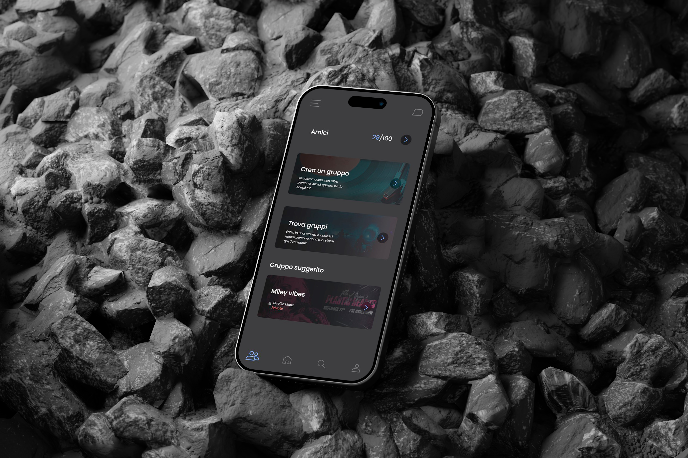
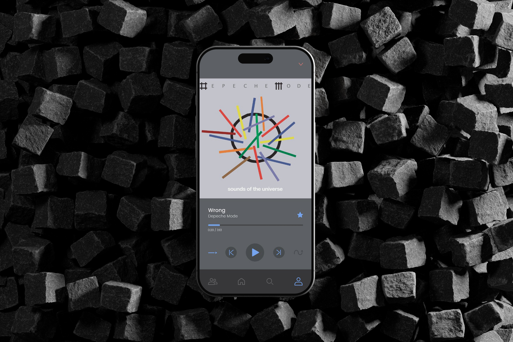
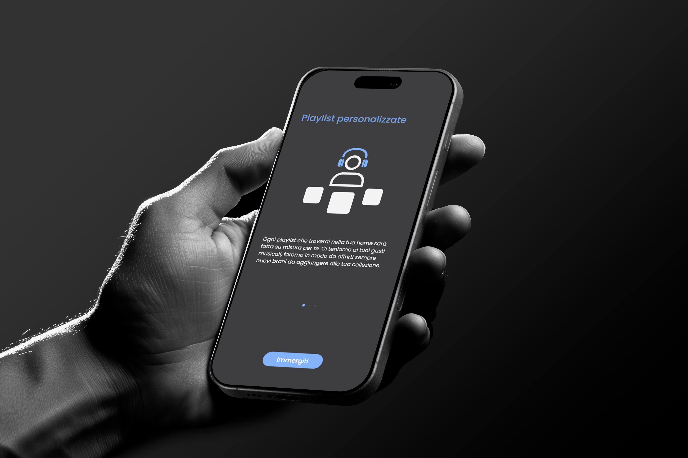
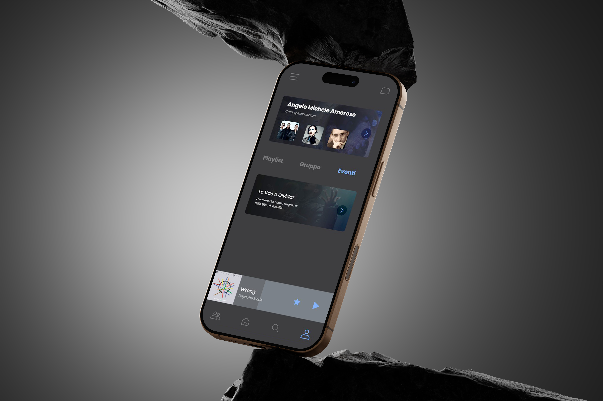

Neodip
A social music experience that connects people in real time.

Context
During the pandemic, the way people experienced music changed drastically. Listening became a more isolated activity, losing its social and collective dimension. Many users lacked meaningful ways to share music, discover new people, and connect through a shared listening experience.
Approach
Neodip is a social music platform designed to bring people together through shared listening experiences. By enabling group sessions, personalized discovery, and real-time interaction, the platform transforms music into a collective activity again. Neodip focuses on creating meaningful connections, turning listening into a social and engaging experience.

The starting question
How might we use music to bring people together, even during a pandemic?
- Year
- 2021
- My role
- Project owner

Outcome
From a music app to a social experience. The project focuses on simplicity and accessibility, designing an intuitive system where users can join sessions, interact, and personalize their experience without friction. Neodip redefines music listening as a shared experience, combining interaction, discovery, and personalization to create meaningful moments of connection.

See also
Wriggle